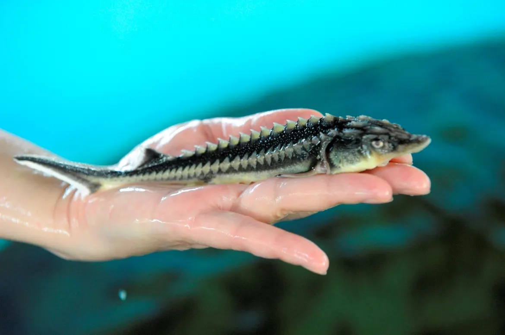
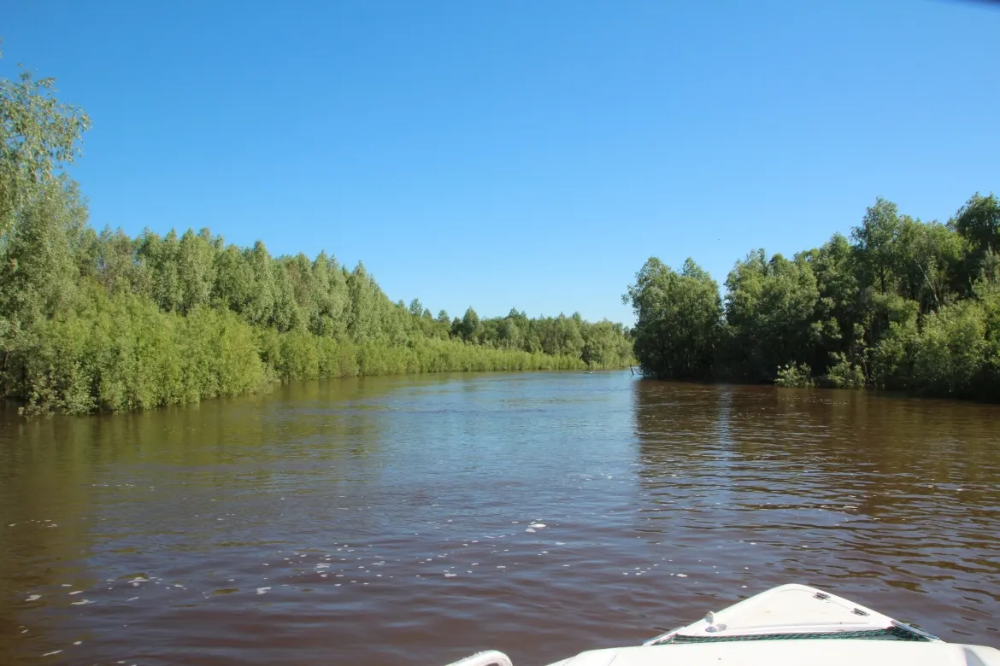
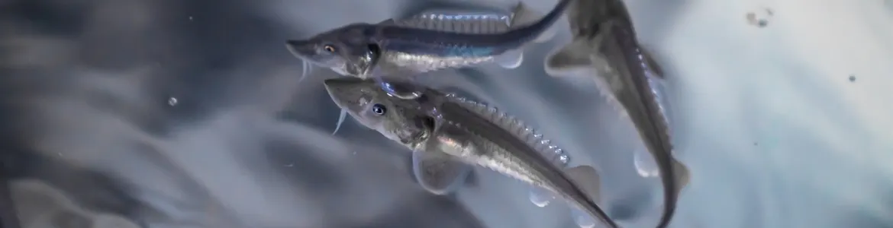

Заготовка производителей
Сентябрь–октябрь
Заготавливают половозрелых рыб, от которых получат икру. У завода есть базы по сбору икры на озёрах Медвежье и Шошъегатор.
На эти озёра завод возит и рыболововРыболовные турыАО «Югорский рыбоводный завод»: искусственное воспроизводство сиговых и осетровых, товарная рыба и икра, рыболовные туры.

2 999 267 штук молоди краснокнижного сибирского осетра завод выпустил в крупные речные магистрали Югры в 2026 году.
Цель — восполнять водные биоресурсы. Так выглядит технологическая схема завода для сиговых видов рыб. Выберите этап.
Сентябрь–октябрь
Заготавливают половозрелых рыб, от которых получат икру. У завода есть базы по сбору икры на озёрах Медвежье и Шошъегатор.
На эти озёра завод возит и рыболововРыболовные туры
Ноябрь: получение икры. Ноябрь–апрель: инкубация
Икру сиговых инкубируют в аппаратах Вейса: это прозрачный сосуд высотой 50 см, сужающийся книзу, с собственной подачей воды, 3–4 литра в минуту.
27 марта 2025 года комиссия подтвердила в цехе 120,13 млн икры сиговых.
Инкубация входит в воспроизводственные работы по договоруОставить заявку
Выклев: первая декада мая. Зарыбление: май
Выклюнувшуюся личинку навеской 0,005 г выпускают в рыбопитомник.
Рыбоводные участки в Ханты-Мансийском районе: озеро Богомолов Сор, 520 га, и озеро Зимний Сор, 620 га.
Кого разводит заводВиды рыб и технологии
Июнь–июль
Следят за ростом молоди, пока она не наберёт нормативную навеску.
Консультация по воспроизводству: Баженов Денис МихайловичЗадать вопрос
Третья декада июля — август, по гидрологическому режиму
Подросшая молодь уходит в реку. Так восполняют водные биоресурсы и компенсируют ущерб, нанесённый им и среде их обитания.
По комплексной программе восстановления муксуна, нельмы и чира в реки Югры выпущено 32 151 405 штук молоди муксуна.
Заказать компенсационные мероприятияЗавод принимает заявки на осуществление компенсационных мероприятий и на научно-исследовательские работы.
А также на расчёт ущербов от хозяйственной деятельности на водоёмах и в водоохранной зоне ХМАО и предложения по их компенсации.
Консультация по воспроизводству водных биоресурсов: Баженов Денис Михайлович, 8 (3467) 31-84-15
в Нижневартовске в Обь выпустили молодь сибирского осетра, выращенную заводом по заказу АО «Самотлорнефтегаз»: каждый малёк не менее 3 граммов.
Завод производит товарную рыбу и посадочный материал. Вылов — непосредственно перед поставкой, с официальными документами и ветеринарными справками.
Отдел реализации+7 (982) 880-77-65+7 (932) 430-21-20
| Продукция | Цена |
|---|---|
| Форель радужнаясвежемороженая, живая, от 1,5 кг | 1 170 ₽за кг |
| Стерлядьсвежемороженая, живая | 1 500 ₽за кг |
| Икра осетрабанка 100 г | 6 500 ₽за банку |
| Икра стерлядибанка 100 г | 4 700 ₽за банку |
| Форель холодного копченияпласт с головой | 1 700 ₽за кг |
| Форель холодного копченияпласт без головы | 1 900 ₽за кг |
| Форель холодного копчениядо 0,350 кг | 1 300 ₽за кг |
| Стейк из радужной форелисвежемороженый | 1 250 ₽за кг |
| Набор для ухи из радужной форелисвежемороженый | 290 ₽за кг |
Для оптовых покупок рассматривается снижение стоимости. Наличие и цену на день заказа уточняйте в отделе реализации.
Заказать продукцию
Отдых и рыбалка на озёрах завода в Ханты-Мансийском районе в любое время года.
Стоимость и даты — по телефону бронирования +7 (3467) 31-84-15, доб. 114.
Заявка на тур

Пресноводная рыба из рода сигов семейства лососёвых. Достигает 0,75 м и 8 кг, живёт до 16 лет. Наиболее многочисленен в Обь-Иртышском бассейне; численность в последние годы резко сокращается из-за массового браконьерского вылова.
Озёрная и озёрно-речная рыба длиной до 50 см, питается планктоном. Благодаря пластичности и быстрому темпу роста широко акклиматизирована в озёрах и водохранилищах.
Пресноводная и полупроходная рыба семейства сигов. Из-за отличных вкусовых качеств приобрела промысловый статус.
Самая маленькая из осетровых, ценная порода, в том числе для искусственного рыборазведения. Отличается длинным узким носом и усиками, напоминающими бахрому.
Веретенообразное тело с несколькими продольными рядами жучек. Окраска спины от тёмно-коричневой до светло-серой, брюха — от светло-жёлтой до белой.

Завод — исполнитель комплексной программы по восстановлению численности ценных сиговых видов рыб, утверждённой Росрыболовством в 2024 году.
«Лучший продукт», диплом I степени: филе слабосолёной форели, Екатеринбург
«Экспортёр года. Сделано в России»: 3 место в УрФО, агропромышленный комплекс, малое и среднее предпринимательство. Поставки в Казахстан
«Лучшие вкусы Югры»: зернистая икра осетровых пород
«Лучший продукт», диплом I степени: форель холодного копчения
Вместе со школой № 9 Ханты-Мансийска шестиклассники проходят на заводе оплачиваемую трудовую практику: от инкубации икры до контроля гидрохимии воды.